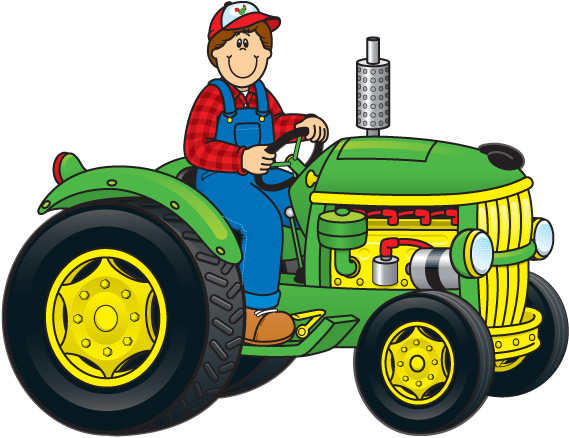
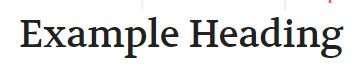
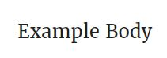

Purpose of Site
My brother is hoping to start his own aerial spraying business. I wanted to create a webiste for him so that
he can advertise on the web. Customers would be able to get on and see what services he provides and where he flies.
I will also show his experience and the planes that he flies as well.
Target Audiences
Primary Audience will be farmers who need to spray their crops for unwanted weeds or for specific diseases. Access to this website will be for computers and mobile phones.
Persona
- Name: Joe Brown
- Occupation: Farmer
- Age: Undetermined
- Motivation: Works hard so that he can play hard. Needs to be able
to produce a great crop so that it makes his time profitable. - Environment: Works all day out the the fields of Idaho.
The Web Pages
- Home Page: Here I will show the home page of his business. Logo, nav bar, mission statement.
- Crew: I will give a bio on Ty and other crew members. The flight hours that they have and the planes they fly.
- Services Provided: I will list all of things that he provides. Fertilizers, cover crops, herbicides,
mapping services. This is where my Json File will be used. - Gallery I am going to show different types of planes and have a gallery of plane pictures.
Json File will also be used on this page. - Contact: On this page I will include my brother's contact information so that farmers can contact him for work.
Styles
Typography
Heading Font
My Heading Font will be Vollkorn from Google Fonts
Body Font
My Body Font will be Merriweather from Google Fonts
